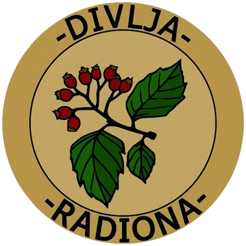

01
Ideja
Sve počinje idejom, skicom ili jednostavnom zamisli o tome što želimo izraditi.

Od ideje do predmeta.
OD IDEJE DO KOMADA
Sve je počelo željom da stvaramo vlastitim rukama.
Ideja je rasla polako, kroz ljubav prema alatima i samom procesu stvaranja. Od prvih ideja i pokušaja, korak po korak, nastajali su komadi koji danas izlaze iz naše radionice.
Naziv Divlja Radiona nosi upravo taj duh. Pomalo nesavršen, slobodan i svoj. Ne želimo da svaki komad izgleda isto niti kao da je izašao iz tvornice. Svaki izrađujemo zasebno, ručno i s puno strpljenja, kako bi na kraju imao svoj karakter i priču.
NAŠE MJESTO
Divlja Radiona nalazi se u Bošnjacima, selu u kojem su tradicija, običaji i povezanost sa svojim krajem važan dio svakodnevice.
Život u ovakvoj sredini oblikovan je znanjem koje se generacijama prenosilo s čovjeka na čovjeka – kroz rad, običaje, zanate i predmete koji su nastajali vlastitim rukama.
Upravo takvo okruženje podsjeća nas koliko vrijedi sačuvati ono što ima svoju priču. Divlja Radiona nastoji njegovati taj odnos prema radu i stvaranju.
GDJE NAS MOŽETE PRONAĆI
Slavonija, Hrvatska
MJESTO GDJE NAŠA PRIČA POČINJEPROCES IZRADE
Svaki komad prolazi kroz nekoliko faza prije nego što napusti radionicu.
Sve počinje idejom, skicom ili jednostavnom zamisli o tome što želimo izraditi.
Odabire se materijal koji će najbolje odgovarati zamišljenom proizvodu.
Materijal se oblikuje, obrađuje i postupno dobiva svoj konačni oblik.
Posebna pažnja posvećuje se detaljima i završnoj obradi.
Na kraju nastaje predmet spreman za svoj novi dom i novu priču.
RUČNI RAD
Upravo u tome je čar ručne izrade. Sitne razlike, tragovi obrade i prirodne karakteristike materijala ne predstavljaju nedostatak, već dio identiteta svakog pojedinog komada.